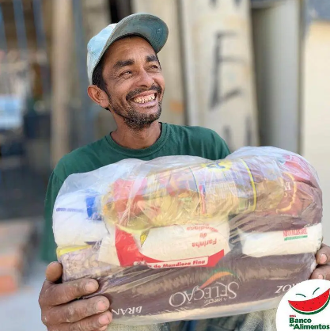
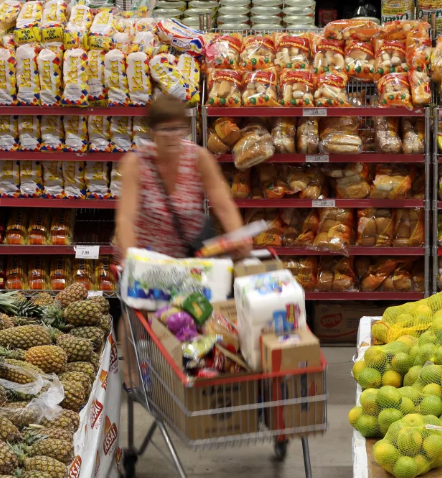
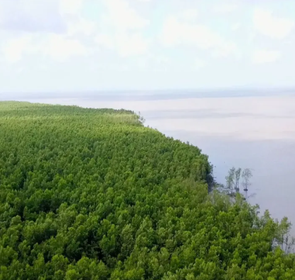
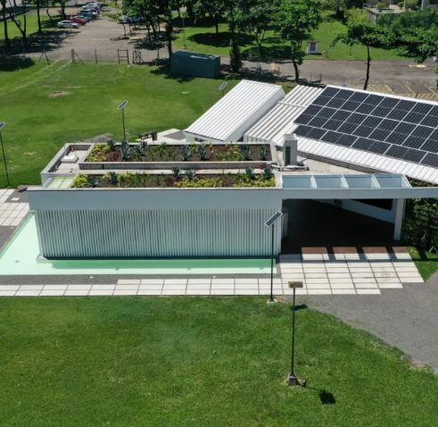

Contribua para a organização
Combate à fome e promoção de agricultura sustentável são desafios da Embrapa em seus 50 anos Fonte: Agência Câmara de Notícias
Em sessão solene, nova presidente da empresa defende o uso da tecnologia para frear mudanças climáticas e produzir alimentos saudáveis. O combate à fome foi apontado por parlamentares e funcionários como um dos desafios permanentes da Empresa Brasileira de Pesquisa Agropecuária (Embrapa), durante sessão solene na Câmara nesta terça-feira (25), para comemorar os 50 anos da instituição. Fonte: Agência Câmara de Notícias
Leia maisEcoRodovias quer infraestruturas resilientes a eventos climáticos e estuda sistema “real time”, diz diretora à CNN
Diretora de Sustentabilidade do grupo EcoRodovias, Monica Jaén afirmou em entrevista à CNN que a empresa vem trabalhando para ter infraestruturas resilientes às mudanças climáticas e, entre as possibilidades, estuda sistema “real time” para este fim.
Leia maisDesmatamento é vilão para transição verde e também para economia, diz diretora do BNDES
Diretora de Infraestrutura, Transição Energética e Mudança Climática do Banco Nacional de Desenvolvimento Econômico e Social (BNDES), Luciana Costa afirma que o desmatamento é obstáculo para o Brasil atingir metas do Acordo de Paris, mas também para a economia do país.
Leia maisQuais as soluções para uma Mobilidade Urbana Sustentável?
Para discutir o tema, no dia 9 de julho acontece o 8º Fórum CNT de Debates. Uma oportunidade de dialogar com o poder público em busca de alternativas para o desenvolvimento da infraestrutura e do transporte nacionais. Imagine uma grande cidade sem transporte público. Metrópoles como São Paulo, Curitiba, Belo Horizonte ou Salvador sem ônibus, metrô ou trem durante vários dias.
Leia mais

Conheça ONGs que ajudam no combate à fome no Brasil e saiba como colaborar. Fonte: CNN
Tema urgente, a insegurança alimentar voltou a bater na porta de milhares de brasileiros. Conheça projetos independentes que distribuem refeições Brasil adentro e saiba como ajudá-los.
Leia mais

Governo normatiza selo verde para certificar origem sustentável de produtos. Fonte: CNN
O governo federal publicou nesta terça-feira (18) as diretrizes do Programa Selo Verde Brasil com o intuito de certificar produtos e serviços brasileiros que atendam a requisitos sustentáveis.
Leia mais

Projeto de gestão de água na região amazônica deve beneficiar mais de mil pessoas. Fonte: CNN
A Coca-Cola Brasil anuncia, nesta terça (11), durante a participação da empresa na Semana de Sustentabilidade do Banco Interamericano de Desenvolvimento (BID), um investimento de R$ 4 milhões em projetos destinados a promover e garantir o acesso à água segura para comunidades no Amazonas e Pará.
Leia mais

Edifício-modelo, autossuficiente em energia, será inaugurado no Rio. Fonte: CNN
O ministro de Minas e Energia, Alexandre Silveira, vai inaugurar nesta segunda-feira (10) um espaço autossuficiente em energia. O local foi construído no Rio de Janeiro pelo Centro de Pesquisas de Energia Elétrica (Cepel).
Leia mais